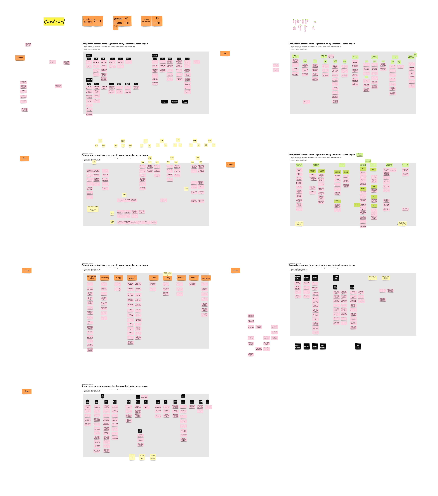
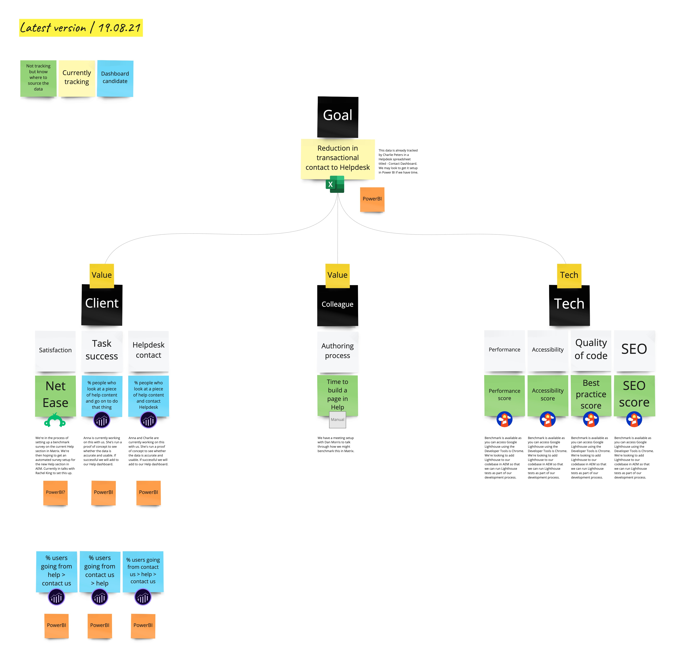

2021 | Hargreaves Lansdown
Defining a scalable self-serve model to reduce avoidable contact
Creating a self-service help experience that improves findability, reduces Helpdesk demand, and enables a more scalable service model, supported by clear evidence for IA, content, and cross-channel decisions.
What we launched
My Role
Senior User Researcher embedded in a cross-functional squad.
I led the research strategy across Discovery and design iterations, working closely with the Product Manager, UX and Content Designers and developers. I also facilitated collaboration with directors and Helpdesk teams to align service expectations and clarify the foundations of a future help model.
Context
Self-service help emerged as a major pain point during strategic discovery. HL’s Help centre had grown to more than 1,000 unstructured FAQs with no ownership or organising principles, creating duplication, poor findability, and a heavy Helpdesk dependancy. This drive operational costs and made it difficult to support clients seeking support across complex financial tasks.

I designed and faciliated IA workshops to explore different Help structures with SME's and the project team. This work took place during the COVID lockdowns, so I established online ways of running interactive, inclusive sessions.
How I Led The Work
- Aligned directors and Helpdesk teams around a unified help model by running vision workshops, analysing Helpdesk contact patterns and behaviours, and established foundational expectations for HL’s future help service.
- Diagnosed systemic IA and content issues through a full audit, analytics review and a benchmark tree-test (showing 66% task failure), creating the evidence base that reframed Help as a strategic service problem rather than a content problem.
- Co-created and validated a new IA via cross-organisational workshops and iterative tree-testing, achieving a 31% improvement in findability and major gains for high call-drivers (e.g. trading tasks rising to 93% success).
- Guided rapid design and content iteration through targeted research, testing discovery behaviours, comprehension and prototype structures to shape principles such as “less is more”.
- Strengthened delivery and cross-channel alignment by supporting user-story mapping and defining performance measures for launch.
Outcomes
- 42% reduction in users going from Help to Contact Us (with comparable traffic).
- Significant increase in Help content discoverability: pages with >500 visits rose from 11 to 44, signalling easier access to relevant topics.
- New IA achieved 31% improvement in overall task success, with major gains on high-value tasks (e.g., +85% for trading queries).
- Delivered substantial internal efficiency gains: content editors’ average page creation time dropped from 9 hours to 5 minutes using the new CMS.

In collaboration with stakeholders and the PM, I defined a series of metrics that would provide a 360 view on our progress towards the desired outcomes.
What I'd Do Next
- Track post-launch behaviour to monitor findability, comprehension and Helpdesk load, identifying opportunities for further refinement.
- Explore personalisation or intent-driven entry points to further reduce navigation errors and cognitive load.